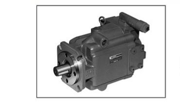

고압 대응
정격 28 MPa, 최고 30 MPa에 대응합니다.
HYDRAULICS / PISTON PUMP / PH SERIES
제품소개 › 유압 › 펌프 › 피스톤 펌프
Low noise, high pressure variable displacement piston pumps
고압 유압 회로에 대응하는 PH80, PH100, PH130 시리즈입니다.

PRODUCT OVERVIEW
PH 시리즈는 고압 조건에 대응하는 저소음 가변용량형 피스톤 펌프입니다.
정격 28 MPa, 최고 30 MPa에 대응합니다.
장비 환경의 소음 부담을 낮춥니다.
PH80·PH100·PH130을 선택할 수 있습니다.
MODEL LINE-UP
PRODUCT INQUIRY